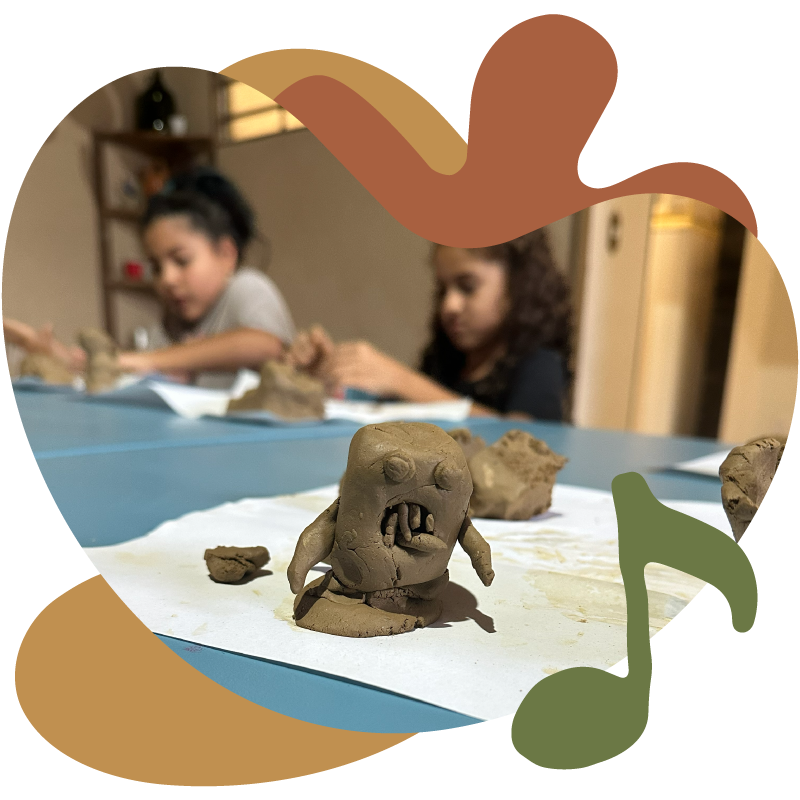
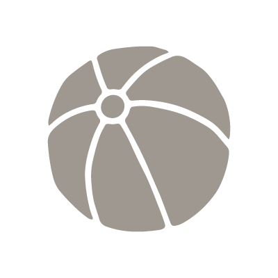

A escola tem um papel fundamental na vida das crianças. Mas parte daquilo que elas se tornam é construída nos momentos entre uma aula e outra: nas brincadeiras, nas responsabilidades do cotidiano, nas conversas e nas descobertas que despertam curiosidade.
No Graveto, acreditamos que toda vivência conta, mesmo as pequenas. Por isso, nossa proposta nasce do encontro entre quatro elementos essenciais para a infância: o cotidiano, a arte, a natureza e a cultura.
Mais do que preencher o tempo com atividades, criamos experiências com intenção. Cada proposta começa com uma pergunta: o que queremos desenvolver com essa experiência? É a partir dela que escolhemos os materiais, os ambientes e os caminhos que cada vivência pode seguir.
Servir o próprio prato, organizar os materiais, cuidar dos objetos que utiliza, ajudar um colega ou resolver um pequeno problema. São gestos simples do cotidiano que ajudam a construir autonomia, confiança e responsabilidade.
Da mesma forma, uma pergunta inesperada, uma história ou um objeto curioso podem abrir caminhos para a investigação e a criatividade. Em vez de oferecer sempre respostas prontas, criamos oportunidades para que a criança observe, experimente, imagine possibilidades e participe das próprias descobertas.
Respeitando o ritmo, os interesses e as particularidades de cada criança, buscamos cultivar a curiosidade, a autonomia, a criatividade e a atenção. Capacidades que se desenvolvem nas experiências do presente e acompanham a criança ao longo da vida.
Cada vivência nasce da observação das crianças, dos interesses do grupo e das oportunidades que surgem no cotidiano. A partir disso, planejamos experiências que dialoguem com um ou mais dos quatro eixos da nossa proposta. Se durante a semana percebemos que o grupo precisa seguir outro caminho, mudamos o planejamento. Aqui, a programação existe para servir às crianças, e não o contrário.
A arte não aparece apenas como atividade. Ela é uma forma de investigar, imaginar, experimentar e produzir significado para aquilo que a criança vive.
Histórias, tradições, música, literatura e diferentes modos de viver ampliam o repertório e ajudam a criança a compreender o mundo para além da própria realidade.
A natureza aproxima a criança dos ciclos, da observação e do cuidado. Mais do que conhecer o ambiente, ela aprende a fazer parte dele.
As pequenas experiências do dia a dia ensinam autonomia, responsabilidade e participação. Se uma vivência não encontra espaço na vida real da criança, ela dificilmente encontra espaço no nosso planejamento.
Nenhuma escolha do Graveto acontece por acaso. Nossa prática é construída a partir de estudos, experiências e autores que contribuíram para ampliar a compreensão sobre desenvolvimento infantil, aprendizagem, arte e cultura.
No Graveto, o ambiente também faz parte da proposta pedagógica. Mais do que acomodar atividades, cada espaço foi pensado para proporcionar experiências que incentivam a curiosidade, a autonomia, a criatividade e a convivência.
São ambientes para imaginar, investigar, ler, descansar, cultivar, criar e brincar. Diferentes possibilidades que se integram ao cotidiano e respeitam o ritmo, os interesses e as necessidades das crianças ao longo do dia.
Um espaço para imaginar, interpretar personagens e criar novas histórias através do faz de conta.
Histórias, livros e leituras que despertam o interesse e ampliam o repertório das crianças.
Cultivar, observar e acompanhar de perto os ciclos da natureza no dia a dia.
Um ambiente onde as refeições também fazem parte das experiências vividas pelas crianças.
Projetos, oficinas e atividades orientadas para explorar ideias, materiais e novas descobertas.

Um convite para brincar, explorar possibilidades e criar relações de forma espontânea.
Um ambiente acolhedor para descansar e respeitar o ritmo de cada criança.
Cada família tem uma rotina, e encontrar o período ideal faz parte dessa escolha. Quer entender melhor como funciona o dia a dia no Graveto? Agende uma visita, conheça nossos espaços e converse com a gente sobre as possibilidades para sua criança.